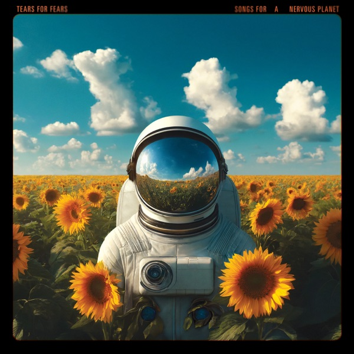

Songs For A Nervous Planet
Tears For Fears
Upgrade idea: This is a first pressing of a 2024 release — there is no meaningful upgrade path yet. The vinyl masters by Justin Shturtz and lacquer cut by Joe Nino-Hernes at Sterling Sound represent current best practice. Worth holding.
- Original release
- 2024
- Pressing year
- 2024
- Country
- US
- Format
- 2× Vinyl LP, Album
- Label / Cat#
- Concord Records – CRE02697
- Genres
- Rock
- Styles
- Alternative Rock
- Discogs release
- 32170617
- Discogs master
- 3634863
- Apple Music
- Songs For A Nervous Planet
- Wikipedia
- Songs For A Nervous Planet
Production notes
Tracklist (Discogs)
| A1 | Say Goodbye To Mum And Dad | |
| A2 | The Girl That I Call Home | |
| A3 | Emily Said | |
| A4 | Astronaut | |
| A5 | The Tipping Point | |
| B6 | Everybody Wants To Rule The World | |
| B7 | Sowing The Seeds Of Love | |
| B8 | Break The Man | |
| B9 | Mad World | |
| C10 | Woman In Chains | |
| C11 | Badman’s Song | |
| C12 | Pale Shelter | |
| D13 | Break It Down Again | |
| D14 | Head Over Heels | |
| D15 | Change | |
| D16 | Shout |
Tracklist (Apple Music)
| 1 | Say Goodbye To Mum And Dad | 3:45 |
| 2 | The Girl That I Call Home | 3:44 |
| 3 | Emily Said | 3:59 |
| 4 | Astronaut | 3:43 |
| 5 | No Small Thing (Live From Franklin, TN) | 4:44 |
| 6 | The Tipping Point (Live From Franklin, TN) | 4:13 |
| 7 | Everybody Wants To Rule The World (Live From Franklin, TN) | 4:24 |
| 8 | Secret World (Live From Franklin, TN) | 4:47 |
| 9 | Sowing The Seeds Of Love (Live From Franklin, TN) | 6:24 |
| 10 | Long, Long, Long Time (Live From Franklin, TN) | 4:17 |
| 11 | Break The Man (Live From Franklin, TN) | 3:57 |
| 12 | My Demons (Live From Franklin, TN) | 3:10 |
| 13 | Rivers Of Mercy (Live From Franklin, TN) | 5:51 |
| 14 | Mad World (Live From Franklin, TN) | 3:34 |
| 15 | Suffer The Children (Live From Franklin, TN) | 3:26 |
| 16 | Woman In Chains (Live From Franklin, TN) | 6:27 |
| 17 | Badman’s Song (Live From Franklin, TN) | 10:10 |
| 18 | Pale Shelter (Live From Franklin, TN) | 4:37 |
| 19 | Break It Down Again (Live From Franklin, TN) | 4:36 |
| 20 | Head Over Heels (Live From Franklin, TN) | 5:08 |
| 21 | Change (Live From Franklin, TN) | 4:32 |
| 22 | Shout (Live From Franklin, TN) | 6:32 |
Personnel & credits
- Lisa Glines — Art Direction, Design
- Surrealistly — Artwork [Astronaut & Sunflower Art]
- Janae Sims — Band [Touring Band], Backing Vocals
- Jasmine Mullen — Band [Touring Band], Backing Vocals
- Curt Smith — Band [Touring Band], Bass, Vocals
- Jamie Wollam — Band [Touring Band], Drums
- Charlton Pettus — Band [Touring Band], Guitar
- Roland Orzabal — Band [Touring Band], Guitar, Vocals
- Doug Petty — Band [Touring Band], Keyboards
- Lauren Evans — Band [Touring Band], Vocals, Backing Vocals
- Joe Nino-Hernes — Lacquer Cut By
- Full Stop Management — Management
- Irving Azoff — Management
- Jeffrey Azoff — Management
- Kate Rancka — Management
- Sarah Montgomery — Management
- Ted Jensen — Mastered By
- Justin Shturtz — Mastered By [Vinyl Masters]
- Charlton Pettus — Music By
- Emily Rath Orzabal — Photography By [Labels A/B/D]
- Matthew Becker — Photography By [Labels C]
- Dave Tesh — Photography By [Live Photos, Jacket Inside/Left]
- Matthew Becker — Photography By [Live Photos, Jacket Inside/Right]
Identifiers
- Barcode: 8 88072 63533 3 (Text, cover)
- Barcode: 888072635333 (Scanned, cover)
- Matrix / Runout: CRE02697-A (1) MRP6175/CRE02697-A 1987983 #4 287337E1 JN-H STERLING (Side A runout)
- Matrix / Runout: CRE02697-B (1) MRP6175/CRE02697-B 287337E2 #4 2038335 JN-H STERLING (Side B runout)
- Matrix / Runout: CRE02697-C (1) MRP6175/CRE02697-C JN-H STERLING 1987989 287337E3 #2 (Side C runout)
- Matrix / Runout: CRE02697-D (1) MRP6175/CRE02697-D JN-H STERLING 1987991 287337E4 #1 (Side D runout)
- Other: CRE02697 (Hype sticker)
- Rights Society: PRS
- Rights Society: ASCAP
Notes
Hype sticker on shrink-wrap:
"2-LP
Featuring Live Performances of
"Shout,"
"Head Over Heels,"
"Everybody Wants To Rule the World"
& more hits
- Plus -
4 New Songs!"
Issued in gatefold cover containing lyrics to the four new songs, and album credits. Records are issued with black, die-cut anti-static sleeves. Tracks are sequentially numbered.
On track A3, "Choir recorded at School Farm Studios.
℗ & © 2024 TFFUK, LLC. Under exclusive license to Concord Records.
Made in U.S.A.
In the runouts, "CRE02697-Ⅹ (1)," "#Ⅹ," and "JN-H" are etched, the rest is stamped.
Notes & discrepancies
- Track count differs: Discogs=16, Apple Music=22
Songs For A Nervous Planet is a 2024 compilation / live-and-new collection by Tears For Fears, released on Concord Records under exclusive license from TFF UK, LLC. The album brings together four new studio recordings alongside live performances of signature songs — “Shout,” “Head Over Heels,” “Everybody Wants to Rule the World,” and others — drawn from the duo’s recent touring activity. It marks one of the few new Tears For Fears releases in years and serves as both a career document and a statement that Roland Orzabal and Curt Smith remain an active creative partnership.
The new studio tracks were recorded at School Farm Studios (Orzabal’s personal studio facility), with music co-written by longtime collaborator Charlton Pettus, who also plays guitar in the touring band. The live performances feature the full touring lineup: Pettus on guitar, Doug Petty on keyboards, Jamie Wollam on drums, Curt Smith on bass and vocals, and backing vocalists Janae Sims, Jasmine Mullen, and Lauren Evans.
This 2024 US pressing was mastered by Ted Jensen (digital) and Justin Shturtz (vinyl masters), with lacquer cut by Joe Nino-Hernes — all at Sterling Sound, New York. The deadwax
JN-Hconfirms Nino-Hernes’s cut. Pressed at Memphis Record Pressing (theMRP6175stamper code), a premier US pressing plant based in Memphis, Tennessee. A second hype sticker variant (Barnes & Noble exclusive) exists with identical music and different shrinkwrap sticker.About this 2024 US pressing (2× Vinyl, LP): Concord Records catalog CRE02697, 2024 first pressing. Gatefold with lyric insert. Mastered by Ted Jensen / Justin Shturtz at Sterling Sound. Lacquer cut by Joe Nino-Hernes. Pressed by Memphis Record Pressing. Barcode 888072635333. Matrix CRE02697-A (1) MRP6175 287337E1 JN-H STERLING.